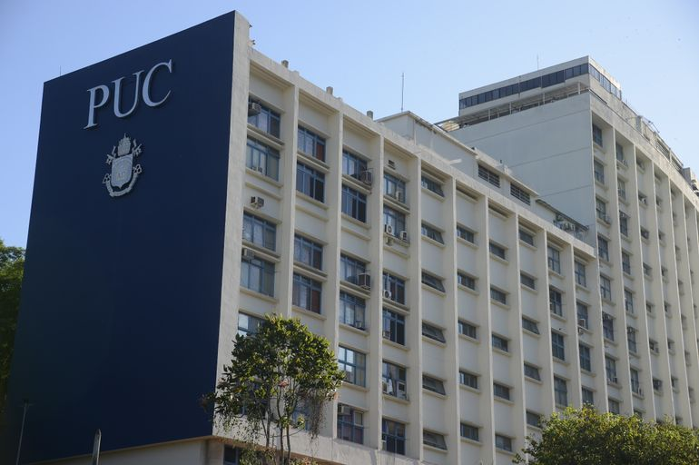
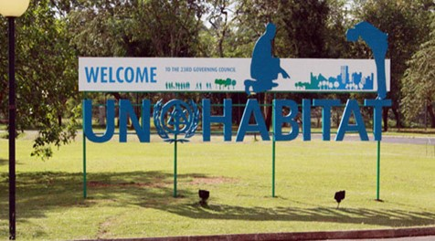

COALIZÃO TRANSIÇÃO ENERGÉTICA E CIDADES
CONTEXTO
- A transição dos sistemas energéticos mundiais para fontes de energia de baixo carbono é crucial para evitar impactos catastróficos do aquecimento global
- Para chegar a emissões líquidas zero antes do final deste século, é necessário promover uma mudança radical na forma como a energia é produzida e consumida.
- A maior parte da demanda de energia ocorre nas áreas urbanas, tornando os stakeholders das cidades importantes atores no processo de transição energética
- Atualmente, a maioria dos debates e estudos sobre políticas e regulamentações energéticas está focada no nível nacional, e as cidades recebem muito pouca atenção das autoridades energéticas e da academia
- Para acelerar a transição energética, é fundamental mobilizar as cidades para desempenhar um papel na transição energética
- O Rio de Janeiro é a Capital da Energia do Brasil, concentrando uma parcela significativa do capital humano, empresas e instituições públicas dedicadas ao setor de energia no país
- O Rio está qualificado para se tornar uma Referência Regional e Global para a promoção do engajamento das cidades na jornada de transição energética
Quem somos
- A Coalizão Transição Energética e Cidades é uma cooperação interinstitucional com intenção de unir esforços e promover a implementação da Nova Agenda Urbana com os 17 Objetivos de Desenvolvimento Sustentável - ODS, particularmente em conexão com a área de Transição Energética Urbana.
- A Coalizão foi integrada inicialmente pela UN-Habitat, a PUC-Rio, através do IEPUC (Instituto de Energia da PUC-Rio), a Secretaria Municipal de Desenvolvimento Econômico, Inovação e Simplificação (SMDEIS) e o Invest.Rio
- Nesse sentido, as “Partes” irão explorar diferentes modalidades de sinergia e convergência através de atividades que possam acelerar o processo de transição energética urbana. À luz do mencionado acima, as Partes irão identificar oportunidades e convidar parceiros para participarem de suas atividades, que podem incluir: seminários, treinamentos virtuais e presenciais, trocas de práticas e outras atividades que pertençam aos seus mandatos e estratégias individuais.
IEPUC

- O IEPUC é uma Unidade Complementar da PUC-RIO, vinculada ao Centro Científico e Tecnológico (CTC) dedicada à pesquisa e ensino na área de energia.
- Foi criado em 2003 com o objetivo de responder às demandas do setor de energia por meio de uma abordagem interdisciplinar, envolvendo fatores técnicos, regulatórios, sociais e ambientais.
- O IEPUC trabalha para promover inovações tecnológicas e políticas e aprimorar recursos humanos para acelerar a transição energética e tornar a sustentabilidade uma realidade para o planeta.
- Comprometida com parceiros do setor empresarial, alia o conhecimento da academia e da indústria para co-criar soluções inovadoras capazes de superar os desafios da sociedade.
UNhabitat

- O Programa de Assentamentos Humanos das Nações Unidas (UN-Habitat) é mandatado pela Assembleia Geral da ONU para promover cidades social e ambientalmente sustentáveis. O UN-Habitat é o ponto focal para todas as questões de urbanização e assentamento humano dentro do sistema da ONU.
- O UN-Habitat trabalha com parceiros para construir cidades e comunidades inclusivas, seguras, resilientes e sustentáveis. O UN-Habitat promove a urbanização como uma força transformadora positiva para pessoas e comunidades, reduzindo a desigualdade, a discriminação e a pobreza.
Prefeitura do Rio
- O Rio de Janeiro é a Capital da Energia do Brasil, concentrando uma parcela significativa do capital humano, empresas e instituições públicas dedicadas ao setor de energia no país
- A Prefeitura do Rio de Janeiro vê a transição energética como uma importante oportunidade para a cidade promover o desenvolvimento local, mobilizando o setor de energia e os recursos humanos sediados na cidade para se engajar na jornada de transição
- A cidade está em processo de lançamento do Polo de Inovação para Transição Energética e Economia de Baixo Carbono que funcionará no prédio do Automóvel Clube do Rio de Janeiro